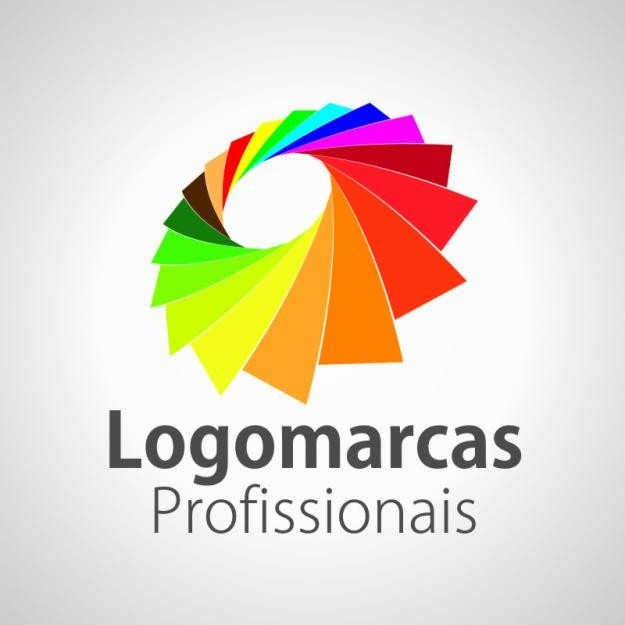

Matriz GoVendas
Matriz GoVendas

Sarah Graziano, fundadora da Logomarcas Profissionais, criou a empresa com o objetivo de ajudar marcas a se destacarem no mercado por meio de identidades visuais modernas e impactantes. A Logomarcas Profissionais é especializada na criação de logotipos criativos, profissionais e personalizados, sempre focando na essência de cada cliente. Buscamos entender os valores, objetivos e o público-alvo de cada negócio para desenvolver soluções únicas e estratégicas. Além da criação de logomarcas, também oferecemos serviços de design gráfico, como materiais para redes sociais, cartões de visita e identidade visual completa. Nosso compromisso é entregar qualidade, criatividade e profissionalismo em cada projeto, garantindo que cada marca tenha uma presença forte, marcante e diferenciada.
Matriz GoVendas
A Logomarcas Profissionais nasceu de forma simples, mas com um propósito muito claro: ajudar empresas a se comunicarem melhor por meio de uma identidade visual forte, estratégica e autêntica. Tudo começou com seu fundador, um entusiasta do design gráfico que desde cedo demonstrava interesse por arte, tipografia e criação digital.Ainda nos primeiros anos de aprendizado, ele já desenvolvia projetos por conta própria, criando logotipos fictícios, estudando marcas conhecidas e buscando entender o que fazia uma identidade visual ser realmente marcante. Com o tempo, surgiram os primeiros pedidos — amigos, conhecidos e pequenos empreendedores que precisavam de uma marca para iniciar seus negócios. Mesmo sendo projetos iniciais, cada trabalho era tratado com extrema dedicação. Não se tratava apenas de criar algo “bonito”, mas de entender profundamente o cliente: sua história, seus valores, seu público e seus objetivos. Foi nesse momento que surgiu um dos principais diferenciais da empresa: o processo estratégico de criação. Antes de qualquer traço ou conceito visual, havia uma etapa de análise e imersão no negócio do cliente. Essa abordagem fez com que os resultados se destacassem, gerando não só satisfação, mas também indicações — que foram fundamentais para o crescimento da marca. No início, a Logomarcas Profissionais operava de forma independente, com recursos limitados, mas com uma enorme vontade de crescer. Foram horas de estudo, aperfeiçoamento técnico e investimento em ferramentas profissionais. O fundador buscava constantemente se atualizar, acompanhando tendências de design, branding e marketing para entregar soluções cada vez mais completas. À medida que a demanda aumentava, a empresa começou a expandir seus serviços. O que antes era focado apenas na criação de logotipos passou a incluir identidade visual completa, materiais gráficos e conteúdo para redes sociais. Essa evolução aconteceu de forma natural, acompanhando as necessidades dos clientes e o crescimento do mercado digital. Outro ponto importante na trajetória da Logomarcas Profissionais foi a construção de um portfólio sólido. Cada projeto entregue representava não apenas um cliente atendido, mas uma história contada através do design. Esse conjunto de trabalhos fortaleceu a credibilidade da empresa e permitiu alcançar novos públicos e segmentos. Com o passar do tempo, a marca se consolidou como uma referência em criação de logomarcas personalizadas, sendo reconhecida pela qualidade, criatividade e profissionalismo. Mesmo com o crescimento, a essência permaneceu a mesma: atendimento próximo, escuta ativa e foco total em soluções únicas. Hoje, a Logomarcas Profissionais é resultado de uma trajetória construída com dedicação, aprendizado contínuo e paixão pelo design. Cada projeto desenvolvido carrega não apenas técnica, mas também propósito — o de ajudar empresas a se posicionarem com força, identidade e autenticidade no mercado. E essa história continua sendo escrita a cada novo cliente, a cada nova marca criada e a cada desafio transformado em oportunidade de inovação.